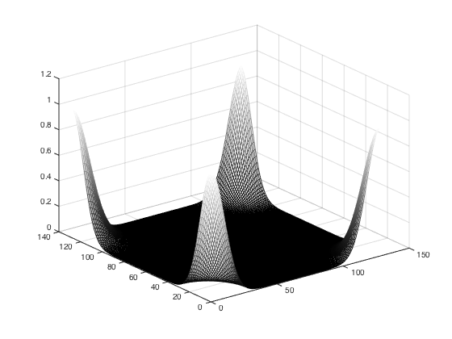
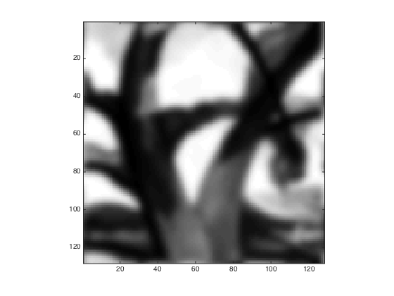

t_FFTinMatlab.m
Explains the Matlab conventions for transforming from space to the frequency domain.
Contents
Initialize
ieInit;
First an extremely small example
nSamples = 6;
Inverse transform
In the transform domain, t(1,1) represents the DC term. You can prove this by calculating the inverse FFT for all zeros except t(1,1)
t = zeros(nSamples,nSamples);
t(1,1) = 1;
ft = ifft2(t)
isreal(ft) % The entries are all 1/(6*6)
ft =
0.0278 0.0278 0.0278 0.0278 0.0278 0.0278
0.0278 0.0278 0.0278 0.0278 0.0278 0.0278
0.0278 0.0278 0.0278 0.0278 0.0278 0.0278
0.0278 0.0278 0.0278 0.0278 0.0278 0.0278
0.0278 0.0278 0.0278 0.0278 0.0278 0.0278
0.0278 0.0278 0.0278 0.0278 0.0278 0.0278
ans =
1
FFT
In the space domain, the s(1,1) position represents the center of the image. You can prove this by calculation
s = zeros(nSamples,nSamples); s(1,1) = 1; fft2(s) % This produces the output for an impulse at the center isreal(s) % The implications of these representations for using fft2 % % See Matlab documentation on fft2, ifft2, fftshift and ifftshift % Image centering % The center of an image of size (N,N) is % when N is odd, ceil(N/2) + 1, % so if N = 5, center is (4,4) % when N is even is also ceil(N/2) + 1 = N/2 + 1, % so if N = 6, center is (4,4) % % When we pad an image or a filter, we want to do so in a way that the % value at the center remains the center. % % This leaves the center of the image at the same location as it was. So, % if we have an odd size image, we pad it on the right and bottom. % % Suppose we have an even size image, say N=6, and we pad it to N=7. The % new center will be at (5,5). To preserve the old center data, which was % at (4,4) to be at (5,5), we must pad at the left and top first. % % If we pad an odd dimension, first pad the right and bottom % If we pad an even dimension, first pad the left and top % % These commented out lines might be examples of ways to do things. % img = ones(64,64); img = padarray(img,[32 32]); % g = zeros(128,128); g(65,65) = 1;
ans =
1 1 1 1 1 1
1 1 1 1 1 1
1 1 1 1 1 1
1 1 1 1 1 1
1 1 1 1 1 1
1 1 1 1 1 1
ans =
1
PSF/OTF example
Suppose we create a PSF. In most coding, the natural way to create a PSF is as an image. The center is not in (1,1), but in the center.
g = fspecial('gaussian',128,2); axis equal figure(1); colormap(gray); mesh(g) % To calculate the OTF of the point spread function, we should place the % center of the image in the (1,1) position. We do this using fftshift. % We can then take the fft2 of the result to produce the OTF. gFT = fft2(fftshift(g)); figure(1); mesh(abs(gFT))
Image example
Again, the image center is not in (1,1). It is in the center.
tmp = load('trees'); cmap = gray(128); img = cmap(tmp.X); img = img(1:128,1:128); figure(1); colormap(gray); imagesc(img); axis image % Before we transform the image, we want to place its center in the (1,1) % position. imgC = fftshift(img); figure(1); imagesc(imgC); axis image % Then we compute the transform imgFT = fft2(imgC); % We are ready to multiply the transformed image and the OTF imgFTgFT = imgFT .* gFT; % We can return the transform to the space domain. imgConvG = ifft2(imgFTgFT); % When we do, the image center is in the (1,1) position. figure(1); colormap(gray); imagesc(imgConvG); axis image % We want the center in the center. So we apply the ifftshift imgConvGCentered = ifftshift(imgConvG); figure(1); imagesc(imgConvGCentered); axis image